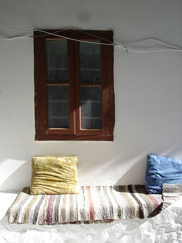

Medlemmar
Ingress.
Paragraf
Anna-Karin Karlsson

Jag heter Anna Karin Karlsson, och är auktoriserad bildterapeut/leg arbetsterapeut, med grundläggande psykoterapeutisk kompetens. Jag har över 25 års erfarenhet av rehabilitering och specialistkompetens i att möta människor med smärta, stress och utmattning, där existentiella frågor och bearbetning ingår för att hitta ny riktning i livet.
Jag jobbar målinriktat och har erfarenhet av bildterapi med bla bearbetande, affektutvecklande, smärt-/stressreducerande och personlighetsutvecklande inriktning.
Stress har ibland ett samband med smärta, bristande sömn och ork vilket bidrar till begränsningar i vardagen. Bildterapi kan vara en väg att använda för att öka medvetenhet om sig själv och sina resurser för ett hållbarare varande och görande i vardagen.
Fokus är på dig, att hitta din egen kraft och att få verktyg att använda i vardagen.
Jag erbjuder:
- Bildterapi individuellt och i grupp
- Vägledningssamtal
- Workshops, prova på bildterapi, retreat
- Föredrag om bildterapi
Kontaktuppgifter, mer information finner du på bildkompassen.se
Där finns även min blogg om bildterapi, välkommen att titta in!
